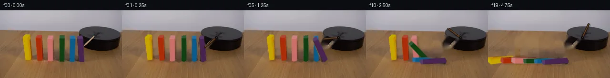

![首帧]()

Round 00
2026-11-04T21:14:20.692815+00:00像素候选变化代码 +224/−0inspection 更新
pixels b74e176a99de53a1 · code 269ea9b420a73ac5
查看本轮 generate.py 真实 diff
--- previous/generate.py +++ current/generate.py @@ -0,0 +1,224 @@ +from pathlib import Path + +import cv2 +import numpy as np +from PIL import Image, ImageDraw + +import artifact_io + + +ROOT = Path(__file__).resolve().parent +H, W = 144, 256 + + +def antialiased_polygon(points, scale=4): + """Return a soft uint8 mask drawn at high resolution and reduced.""" + canvas = np.zeros((H * scale, W * scale), np.uint8) + pts = np.rint(np.asarray(points, np.float32) * scale).astype(np.int32) + cv2.fillPoly(canvas, [pts], 255, lineType=cv2.LINE_AA) + return cv2.resize(canvas, (W, H), interpolation=cv2.INTER_AREA) + + +def over(dst, color, alpha): + """Alpha-composite either an RGB image or one RGB color onto dst.""" + a = np.asarray(alpha, np.float32)[..., None] / 255.0 + src = np.asarray(color, np.float32) + return np.clip(dst.astype(np.float32) * (1.0 - a) + src * a, 0, 255).astype(np.uint8) + + +def rotate_sprite(source, alpha, pivot, angle): + matrix = cv2.getRotationMatrix2D(tuple(map(float, pivot)), float(angle), 1.0) + rgb = cv2.warpAffine( + source, + matrix, + (W, H), + flags=cv2.INTER_LINEAR, + borderMode=cv2.BORDER_CONSTANT, + borderValue=(0, 0, 0), + ) + a = cv2.warpAffine( + alpha, + matrix, + (W, H), + flags=cv2.INTER_LINEAR, + borderMode=cv2.BORDER_CONSTANT, + borderValue=0, + ) + return rgb, a + + +def make_clean_plate(source, block_masks): + # Remove the bodies and their compact contact shadows. The inpaint radius is + # deliberately small so adjacent wood grain remains the source of the fill. + removal = np.zeros((H, W), np.uint8) + for mask in block_masks: + removal = np.maximum(removal, mask) + removal = cv2.dilate((removal > 8).astype(np.uint8) * 255, np.ones((5, 5), np.uint8)) + cv2.rectangle(removal, (46, 106), (179, 113), 255, thickness=-1) + + # Erase the source stick from the platform/table before rendering the moving + # one. This mask follows the observed 198,58 -> 176,83 segment only. + lever_mask = np.zeros((H, W), np.uint8) + cv2.line(lever_mask, (198, 58), (176, 83), 255, 7, lineType=cv2.LINE_AA) + cv2.circle(lever_mask, (198, 58), 4, 255, thickness=-1, lineType=cv2.LINE_AA) + removal = np.maximum(removal, lever_mask) + + # TELEA is used only to reconstruct pixels hidden in the supplied frame. + return cv2.inpaint(source, removal, 4.0, cv2.INPAINT_TELEA) + + +def add_shadow(frame, alpha, pivot, angle): + # A contact-biased transformed silhouette: short down-right offset, light + # blur, and reduced opacity. Shadows become shallower as a block lies down. + rad = np.deg2rad(min(90.0, max(0.0, angle))) + dx = int(round(2.5 + 2.5 * np.sin(rad))) + dy = int(round(2.0 + 0.8 * np.cos(rad))) + matrix = np.float32([[1, 0, dx], [0, 1, dy]]) + shifted = cv2.warpAffine(alpha, matrix, (W, H), flags=cv2.INTER_LINEAR) + shifted = cv2.GaussianBlur(shifted, (0, 0), 1.35) + strength = 0.20 - 0.05 * np.sin(rad) + shadow_alpha = np.clip(shifted.astype(np.float32) * strength, 0, 255).astype(np.uint8) + return over(frame, np.array([62, 42, 27], np.uint8), shadow_alpha) + + +def draw_lever(frame, angle_deg): + # Render at 4x for clean subpixel edges. The shaft is a dark brown wooden + # strip with a warm upper edge and a compact pivot cap. + scale = 4 … diff truncated; 137 more lines …